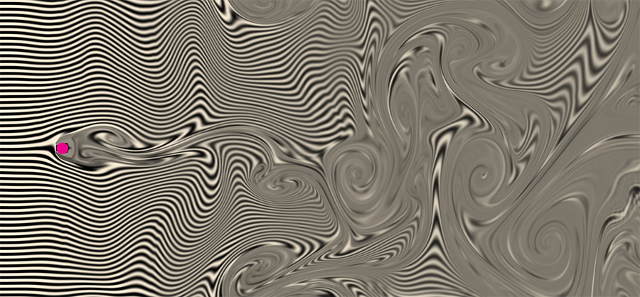

Vortex Shedding Fluid Simulation
This simulation solves the
Navier-Stokes equations for incompressible fluid flow past an obstacle in a GPU fragment shader.
It exhibits a phenomenon called
vortex shedding,
where vortices of alternating spin spontaneously emerge behind the obstacle.
To increase performance, I solved for the velocity vector field of the fluid at a lower resolution than I used to compute the distribution of material moving through the fluid (shown in black and white).
I used bilinear interpolation to smooth out most artifacts caused by this speedup - though you can still see some artifacts around the boundary of the obstacle.
I ignored the viscous diffusion term from the Navier-Stokes formula to encourage better vortex formation (the implicit advection solving I'm using creates enough diffusion on its own for this system).
Click and drag to apply a force to the fluid:

To learn more about the math involved, check out the following sources:
Fast Fluid Dynamics Simulation on the GPU - a very well written tutorial about programming the Navier-Stokes equations on a GPU.
Though not WebGL specific, it was still very useful.
Fluid Simulation (with WebGL demo) - this article has some nice, interactive graphics that helped me debug my code.
Stable Fluids - a paper about stable numerical methods for evaluating Navier-Stokes on a discrete grid.
Written by
Amanda Ghassaei as a homework assignment for
The Nature of Mathematical Modeling, code on
Github.
If you like this, you might also check out my other
Fluid Simulation app.